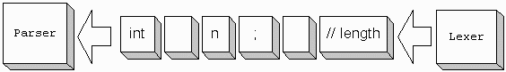
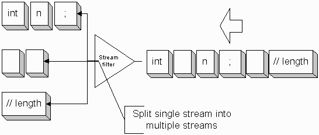
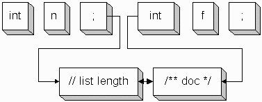
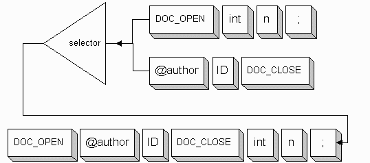
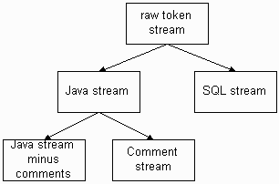

Traditionally, a lexer and parser are tightly coupled objects; that is, one does not imagine anything sitting between the parser and the lexer, modifying the stream of tokens. However, language recognition and translation can benefit greatly from treating the connection between lexer and parser as a token stream. This idea is analogous to Java I/O streams, where you can pipeline lots of stream objects to produce highly-processed data streams.
ANTLR identifies a stream of Token objects as any object that satisfies the TokenStream interface (prior to 2.6, this interface was called Tokenizer); i.e., any object that implements the following method.
Token nextToken();
Graphically, a normal stream of tokens from a lexer (producer) to a parser (consumer) might look like the following at some point during the parse.

The most common token stream is a lexer, but once you imagine a physical stream between the lexer and parser, you start imagining interesting things that you can do. For example, you can:
The beauty of the token stream concept is that parsers and lexers are not affected--they are merely consumers and producers of streams. Stream objects are filters that produce, process, combine, or separate token streams for use by consumers. Existing lexers and parsers may be combined in new and interesting ways without modification.
This document formalizes the notion of a token stream and describes in detail some very useful stream filters.
A token stream is any object satisfying the following interface.
public interface TokenStream {
public Token nextToken()
throws java.io.IOException;
}
For example, a "no-op" or pass-through filter stream looks like:
import antlr.*;
import java.io.IOException;
class TokenStreamPassThrough
implements TokenStream {
protected TokenStream input;
/** Stream to read tokens from */
public TokenStreamPassThrough(TokenStream in) {
input = in;
}
/** This makes us a stream */
public Token nextToken() throws IOException {
return input.nextToken(); // "short circuit"
}
}
You would use this simple stream by having it pull tokens from the lexer and then have the parser pull tokens from it as in the following main() program.
public static void main(String[] args) {
MyLexer lexer =
new MyLexer(new DataInputStream(System.in));
TokenStreamPassThrough filter =
new TokenStreamPassThrough(lexer);
MyParser parser = new MyParser(filter);
parser.startRule();
} Most of the time, you want the lexer to discard whitespace and comments, however, what if you also want to reuse the lexer in situations where the parser must see the comments? You can design a single lexer to cover many situations by having the lexer emit comments and whitespace along with the normal tokens. Then, when you want to discard whitespace, put a filter between the lexer and the parser to kill whitespace tokens.
ANTLR provides TokenStreamBasicFilter for such situations. You can instruct it to discard any token type or types without having to modify the lexer. Here is an example usage of TokenStreamBasicFilter that filters out comments and whitespace.
public static void main(String[] args) {
MyLexer lexer =
new MyLexer(new DataInputStream(System.in));
TokenStreamPassThrough filter =
new TokenStreamPassThrough(lexer);
filter.discard(MyParser.WS);
filter.discard(MyParser.COMMENT);
MyParser parser = new MyParser(filter);
parser.startRule();
}
Note that it is more efficient to have the lexer immediately discard lexical structures you do not want because you do not have to construct a Token object. On the other hand, filtering the stream leads to more flexible lexers.
Sometimes you want a translator to ignore but not discard portions of the input during the recognition phase. For example, you want to ignore comments vis-a-vis parsing, but you need the comments for translation. The solution is to send the comments to the parser on a hidden token stream--one that the parser is not "listening" to. During recognition, actions can then examine the hidden stream or streams, collecting the comments and so on. Stream-splitting filters are like prisms that split white light into rainbows.
The following diagram illustrates a situation in which a single stream of tokens is split into three.

You would have the parser pull tokens from the topmost stream.
There are many possible capabilities and implementations of a stream splitter. For example, you could have a "Y-splitter" that actually duplicated a stream of tokens like a cable-TV Y-connector. If the filter were thread-safe and buffered, you could have multiple parsers pulling tokens from the filter at the same time.
This section describes a stream filter supplied with ANTLR called TokenStreamHiddenTokenFilter that behaves like a coin sorter, sending pennies to one bin, dimes to another, etc... This filter splits the input stream into two streams, a main stream with the majority of the tokens and a hidden stream that is buffered so that you can ask it questions later about its contents. Because of the implementation, however, you cannot attach a parser to the hidden stream. The filter actually weaves the hidden tokens among the main tokens as you will see below.
Consider the following simple grammar that reads in integer variable declarations.
decls: (decl)+
;
decl : begin:INT ID end:SEMI
;
Now assume input:
int n; // list length /** doc */ int f;
Imagine that whitespace is ignored by the lexer and that you have instructed the filter to split comments onto the hidden stream. Now if the parser is pulling tokens from the main stream, it will see only "INT ID SEMI FLOAT ID SEMI" even though the comments are hanging around on the hidden stream. So the parser effectively ignores the comments, but your actions can query the filter for tokens on the hidden stream.
The first time through rule decl, the begin token reference has no hidden tokens before or after, but
filter.getHiddenAfter(end)
returns a reference to token
// list length
which in turn provides access to
/** doc */
The second time through decl
filter.getHiddenBefore(begin)
refers to the
/** doc */
comment.
The following diagram illustrates how the Token objects are physically weaved together to simulate two different streams.

As the tokens are consumed, the TokenStreamHiddenTokenFilter object hooks the hidden tokens to the main tokens via linked list. There is only one physical TokenStream of tokens emanating from this filter and the interweaved pointers maintain sequence information.
Because of the extra pointers required to link the tokens together, you must use a special token object called CommonHiddenStreamToken (the normal object is called CommonToken). Recall that you can instruct a lexer to build tokens of a particular class with
lexer.setTokenObjectClass("classname");
Technically, this exact filter functionality could be implemented without requiring a special token object, but this filter implementation is extremely efficient and it is easy to tell the lexer what kind of tokens to create. Further, this implementation makes it very easy to automatically have tree nodes built that preserve the hidden stream information.
This filter affects the lazy-consume of ANTLR. After recognizing every main stream token, the TokenStreamHiddenTokenFilter must grab the next Token to see if it is a hidden token. Consequently, the use of this filter is not be very workable for interactive (e.g., command-line) applications.
To use TokenStreamHiddenTokenFilter, all you have to do is:
MyLexer lexer = new MyLexer(some-input-stream); lexer.setTokenObjectClass( "antlr.CommonHiddenStreamToken" );
TokenStreamHiddenTokenFilter filter = new TokenStreamHiddenTokenFilter(lexer);
filter.discard(MyParser.WS); filter.hide(MyParser.SL_COMMENT);
MyParser parser = new MyParser(filter);
try {
parser.startRule(); // parse as usual
}
catch (Exception e) {
System.err.println(e.getMessage());
}
See the ANTLR fieldguide entry on preserving whitespace for a complete example.
Ultimately, hidden stream tokens are needed during the translation phase, which normally means while tree walking. How do we pass the hidden stream info to the translator without mucking up the tree grammar? Easy: use AST nodes that save the hidden stream tokens. ANTLR defines CommonASTWithHiddenTokens for you that hooks the hidden stream tokens onto the tree nodes automatically; methods are available to access the hidden tokens associated with a tree node. All you have to do is tell the parser to create nodes of this node type rather than the default CommonAST.
parser.setASTNodeClass("antlr.CommonASTWithHiddenTokens");
Tree nodes are created as functions of Token objects. The initialize() method of the tree node is called with a Token object when the ASTFactory creates the tree node. Tree nodes created from tokens with hidden tokens before or after will have the same hidden tokens. You do not have to use this node definition, but it works for many translation tasks:
package antlr;
/** A CommonAST whose initialization copies
* hidden token information from the Token
* used to create a node.
*/
public class CommonASTWithHiddenTokens
extends CommonAST {
// references to hidden tokens
protected Token hiddenBefore, hiddenAfter;
public CommonHiddenStreamToken getHiddenAfter() {
return hiddenAfter;
}
public CommonHiddenStreamToken getHiddenBefore() {
return hiddenBefore;
}
public void initialize(Token tok) {
CommonHiddenStreamToken t =
(CommonHiddenStreamToken)tok;
super.initialize(t);
hiddenBefore = t.getHiddenBefore();
hiddenAfter = t.getHiddenAfter();
}
}
Notice that this node definition assumes that you are using CommonHiddenStreamToken objects. A runtime class cast except occurs if you do not have the lexer create CommonHiddenStreamToken objects.
By partitioning up the input stream and preventing hidden stream tokens from referring to main stream tokens, GC is allowed to work on the Token stream. In the integer declaration example above, when there are no more references to the first SEMI token and the second INT token, the comment tokens are candidates for garbage collection. If all tokens were linked together, a single reference to any token would prevent GC of any tokens. This is not the case in ANTLR's implementation.
This filter works great for preserving whitespace and comments during translation, but is not always the best solution for handling comments in situations where the output is very dissimilar to the input. For example, there may be 3 comments interspersed within an input statement that you want to combine at the head of the output statement during translation. Rather than having to ask each parsed token for the comments surrounding it, it would be better to have a real, physically-separate stream that buffered the comments and a means of associating groups of parsed tokens with groups of comment stream tokens. You probably want to support questions like "give me all of the tokens on the comment stream that originally appeared between this beginning parsed token and this ending parsed token."
This filter implements the exact same functionality as JavaCC's special tokens. Sriram Sankar (father of JavaCC) had a great idea with the special tokens and, at the 1997 Dr. T's Traveling Parsing Revival and Beer Tasting Festival, the revival attendees extended the idea to the more general token stream concept. Now, the JavaCC special token functionality is just another ANTLR stream filter with the bonus that you do not have to modify the lexer to specify which tokens are special.
Now, consider the opposite problem where you want to combine multiple streams rather than splitting a single stream. When your input contains sections or slices that are radically diverse such as Java and JavaDoc comments, you will find that it is hard to make a single lexer recognize all slices of the input. This is primarily because merging the token definitions of the various slices results in an ambiguous lexical language or allows invalid tokens. For example, "final" may be a keyword in one section, but an identifier in another. Also, "@author" is a valid javadoc tag within a comment, but is invalid in the surrounding Java code.
Most people solve this problem by having the lexer sit in one of multiple states (for example, "reading Java stuff" vs "reading JavaDoc stuff"). The lexer starts out in Java mode and then, upon "/**", switches to JavaDoc mode; "*/" forces the lexer to switch back to Java mode.
Having a single lexer with multiple states works, but having multiple lexers that are multiplexed onto the same token stream solves the same problem better because the separate lexers are easier to reuse (no cutting and pasting into a new lexer--just tell the stream multiplexor to switch to it). For example, the JavaDoc lexer could be reused for any language problem that had JavaDoc comments.
ANTLR provides a predefined token stream called TokenStreamSelector that lets you switch between multiple lexers. Actions in the various lexers control how the selector switches input streams. Consider the following Java fragment.
/** Test. * @author Terence */ int n;
Given two lexers, JavaLexer and JavaDocLexer, the sequence of actions by the two lexers might look like this:
JavaLexer: match JAVADOC_OPEN, switch to JavaDocLexer
JavaDocLexer: match AUTHOR
JavaDocLexer: match ID
JavaDocLexer: match JAVADOC_CLOSE, switch back to JavaLexer
JavaLexer: match INT
JavaLexer: match ID
JavaLexer: match SEMI
In the Java lexer grammar, you will need a rule to perform the switch to the JavaDoc lexer (recording on the stack of streams the "return lexer"):
JAVADOC_OPEN
: "/**" {selector.push("doclexer");}
;
Similarly, you will need a rule in the JavaDoc lexer to switch back:
JAVADOC_CLOSE
: "*/" {selector.pop();}
;
The selector has a stack of streams so the JavaDoc lexer does not need to know who invoked it.
Graphically, the selector combines the two lexer streams into a single stream presented to the parser.

The selector can maintain of list of streams for you so that you can switch to another input stream by name or you can tell it to switch to an actual stream object.
public class TokenStreamSelector implements TokenStream {
public TokenStreamSelector() {...}
public void addInputStream(TokenStream stream,
String key) {...}
public void pop() {...}
public void push(TokenStream stream) {...}
public void push(String sname) {...}
/** Set the stream without pushing old stream */
public void select(TokenStream stream) {...}
public void select(String sname)
throws IllegalArgumentException {...}
}
Using the selector is easy:
TokenStreamSelector selector = new TokenStreamSelector();
selector.addInputStream(mainLexer, "main"); selector.addInputStream(doclexer, "doclexer");
// start with main java lexer
selector.select("main");
JavaParser parser = new JavaParser(selector);
Before moving on to how the parser uses the selector, note that the two lexers have to read characters from the same input stream. Prior to ANTLR 2.6.0, each lexer had its own line number variable, input char stream variable and so on. In order to share the same input state, ANTLR 2.6.0 factors the portion of a lexer dealing with the character input into an object, LexerSharedInputState, that can be shared among n lexers (single-threaded). To get multiple lexers to share state, you create the first lexer, ask for its input state object, and then use that when constructing any further lexers that need to share that input state:
// create Java lexer JavaLexer mainLexer = new JavaLexer(input); // create javadoc lexer; attach to shared // input state of java lexer JavaDocLexer doclexer = new JavaDocLexer(mainLexer.getInputState());
Just as a single lexer may have trouble producing a single stream of tokens from diverse input slices or sections, a single parser may have trouble handling the multiplexed token stream. Again, a token that is a keyword in one lexer's vocabulary may be an identifier in another lexer's vocabulary. Factoring the parser into separate subparsers for each input section makes sense to handle the separate vocabularies as well as for promoting grammar reuse.
The following parser grammar uses the main lexer token vocabulary (specified with the importVocab option) and upon JAVADOC_OPEN it creates and invokes a JavaDoc parser to handle the subsequent stream of tokens from within the comment.
class JavaParser extends Parser;
options {
importVocab=Java;
}
input
: ( (javadoc)? INT ID SEMI )+
;
javadoc
: JAVADOC_OPEN
{
// create a parser to handle the javadoc comment
JavaDocParser jdocparser =
new JavaDocParser(getInputState());
jdocparser.content(); // go parse the comment
}
JAVADOC_CLOSE
;
You will note that ANTLR parsers from 2.6.0 also share token input stream state. When creating the "subparser", JavaParser tells it to pull tokens from the same input state object.
The JavaDoc parser matches a bunch of tags:
class JavaDocParser extends Parser;
options {
importVocab=JavaDoc;
}
content
: ( PARAM // includes ID as part of PARAM
| EXCEPTION
| AUTHOR
)*
;
When the subparser rule content finishes, control is naturally returned to the invoking method, javadoc, in the Java parser.
What would happen if the parser needed to look two tokens ahead at the start of the JavaDoc comment? In other words, from the perspective of the main parser, what is the token following JAVADOC_OPEN? Token JAVADOC_CLOSE, naturally! The main parser treats any JavaDoc comment, no matter how complicated, as a single entity; it does not see into the token stream of the comment nor should it--the subparser handles that stream.
What is the token following the content rule in the subparser? "End of file". The analysis of the subparser cannot determine what random method will call it from your code. This is not an issue because there is normally a single token that signifies the termination of the subparser. Even if EOF gets pulled into the analysis somehow, EOF will not be present on the token stream.
Multiple lexer states are also often used to handle very complicated single tokens such as strings with embedded escape characters where input "\t" should not be allowed outside of a string. Typically, upon the initial quote, the lexer switches to a "string state" and then switches back to the "normal state" after having matched the guts of the string.
So-called "modal" programming, where your code does something different depending on a mode, is often a bad practice. In the situation of complex tokens, it is better to explicity specify the complicated token with more rules. Here is the golden rule of when to and when not to use multiplexed token streams:
Complicated single tokens should be matched by calling another (protected) lexer rule whereas streams of tokens from diverse slices or sections should be handled by different lexers multiplexed onto the same stream that feeds the parser.
For example, the definition of a string in a lexer should simply call another rule to handle the nastiness of escape characters:
STRING_LITERAL
: '"' (ESC|~('"'|'\\'))* '"'
;
protected // not a token; only invoked by another rule.
ESC
: '\\'
( 'n'
| 'r'
| 't'
| 'b'
| 'f'
| '"'
| '\''
| '\\'
| ('u')+
HEX_DIGIT HEX_DIGIT HEX_DIGIT HEX_DIGIT
...
)
;
The ANTLR 2.6 release provides the basic structure for using token streams--future versions will be more sophisticated once we have experience using them.
The current "hidden token" stream filter clearly solves the "ignore but preserve whitespace" problem really well, but it does not handle comments too well in most situations. For example, in real translation problems you want to collect comments at various single tree nodes (like DECL or METHOD) for interpretation rather than leaving them strewn throughout the tree. You really need a stream splitter that buffers up the comments on a separate stream so you can say "give me all comments consumed during the recognition of this rule" or "give me all comments found between these two real tokens." That is almost certainly something you need for translation of comments.
Token streams will lead to fascinating possibilities. Most folks are not used to thinking about token streams so it is hard to imagine what else they could be good for. Let your mind go wild. What about embedded languages where you see slices (aspects) of the input such as Java and SQL (each portion of the input could be sliced off and put through on a different stream). What about parsing Java .class files with and without debugging information? If you have a parser for .class files without debug info and you want to handle .class files with debug info, leave the parser alone and augment the lexer to see the new debug structures. Have a filter split the debug tokens of onto a different stream and the same parser will work for both types of .class files.
Later, I would like to add "perspectives", which are really just another way to look at filters. Imagine a raw stream of tokens emanating from a lexer--the root perspective. I can build up a tree of perspectives very easily from there. For example, given a Java program with embedded SQL, you might want multiple perspectives on the input stream for parsing or translation reasons:

You could attach a parser to the SQL stream or the Java stream minus comments, with actions querying the comment stream.
In the future, I would also like to add the ability of a parser to generate a stream of tokens (or text) as output just like it can build trees now. In this manner, multipass parsing becomes a very natural and simple problem because parsers become stream producers also. The output of one parser can be the input to another.
Version: $Id: //depot/code/org.antlr/release/antlr-2.7.5/doc/streams.html#1 $